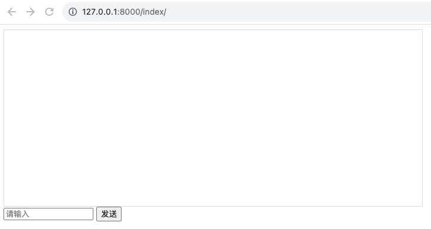
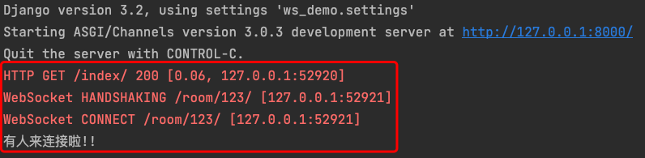
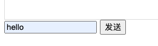
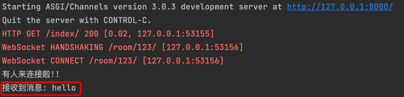
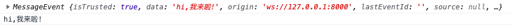
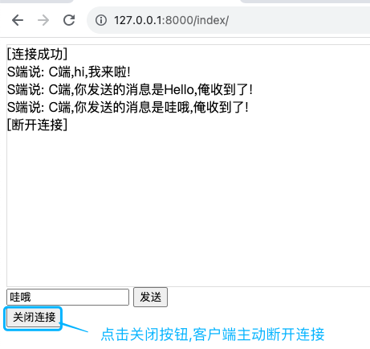
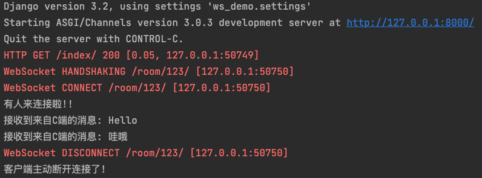
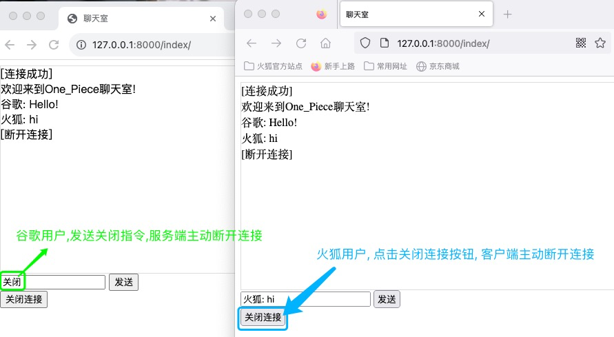
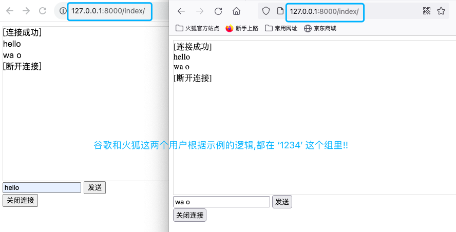
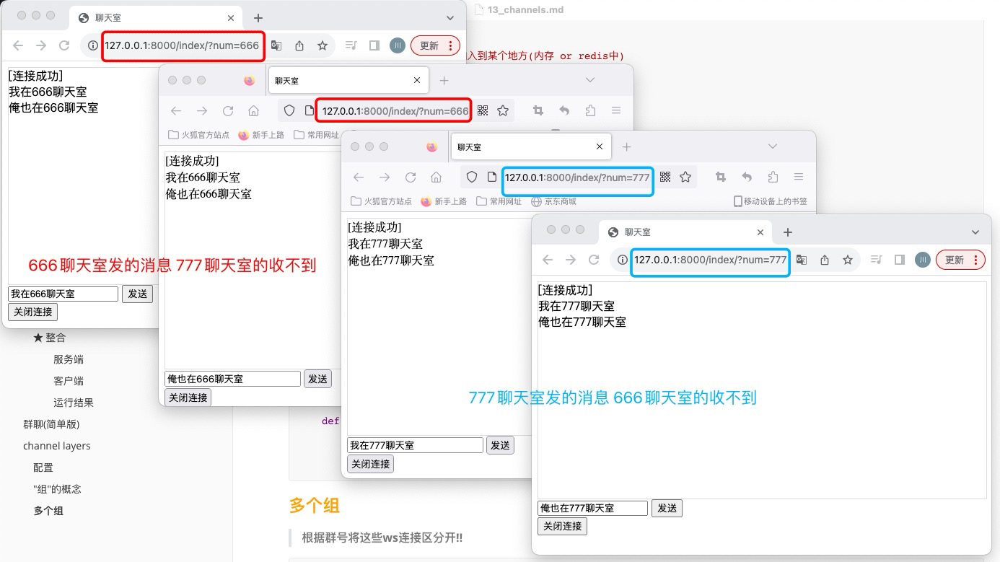

channels
websocket¶
客户端和服务端创建连接不断开,那么就可以实现双向通信.
参考链接:https://www.cnblogs.com/wupeiqi/p/6558766.html
初识¶
○ 传统的Web开发过程中:
- http协议,无状态&短连接!
无状态,你不知道我是谁; 短连接,一次请求一次响应断开链接.
★ 客户端永远是主动发起者,而服务端永远是回复者.
简单来说:
1> 客户端主动连接服务端
2> 客户端向服务端发送消息,服务端接收到并返回数据
3> 客户端接收到数据
4> 断开连接
Ps: 登陆成功,返回cookie,下次请求带着cookie来,你就知道我是谁啦!
想要在开发过程中保留一些状态信息,就可以基于cookie来实现.
- https = http + 对数据进行加密.
○ 现在支持:
- websocket协议,创建持久的连接不断开,基于这个连接可以进行收发数据!
什么时候用? ★ 记住一点,服务端想要主动向客户端推送消息,就可以选择websocket协议!!
Ps:像轮询、长轮询的机制,一定是客户端发起,服务端再响应.使用的是http协议.
应用场景:
- web聊天室
- 实时图表 (柱状图、饼图等可以使用hightcharts来实现)
- 工单审批系统
- 代码发布系统
核心原理¶
http协议 粗略可分为三个步骤, 1.创建连接、2.传输数据、3.断开连接
websocket协议,是建立在http协议之上的! So, websocket也会有http协议的三个步骤, 但不仅是这三个步骤.
另外, http是基于TCP协议的, 所以websocket也是!
step1: 由客户端主动发起, 与服务端创建好连接后. (TCP三次握手)
step2: 并不是直接进行数据传输,而是进入websocket的 握手/验证 环节! 验证服务端需要支持websocket协议才ok.
“严格意义上来说,握手环节也是在传输数据.”
websocket的握手环节: 客户端发送一个消息,后端接收到消息后,对其做一些特殊处理,然后返回.
发什么消息?怎样的特殊处理?都必须按照规定的来.
1> 在浏览器上生成一个随机字符串,加密得到秘文,将明文发送给服务端
2> 服务端拿到这串随机字符串明文后,同样会进行加密的到秘文,加密算法得和浏览器客户端的加密算法一致,将秘文发送回浏览器
3> 浏览器拿到服务端发送过来的秘文,与自己加密得到的秘文进行比对
若一致,则证明服务端支持websocket协议!! 握手/验证 环节通过!
具体来说:
- 客户端向服务端发送的数据
GET /chatsocket HTTP/1.1 # 请求首行
# 请求头
Host: 127.0.0.1:8002
Connection: Upgrade
Pragma: no-cache
Cache-Control: no-cache
Upgrade: websocket
Origin: http://localhost:63342
Sec-WebSocket-Version: 13
Sec-WebSocket-Key: mnwFxiOlctXFN/DeMt1Amg== # Sec-WebSocket-Key就是那个随机字符串!!
Sec-WebSocket-Extensions: permessage-deflate; client_max_window_bits
... ...
\r\n\r\n # \r\n\r\n后面是请求体内容,因为是GET请求,所以请求体肯定是空的
- 服务端接收数据后,会拿到随机字符串
拼接magic string、hmac1加密、bases64加密、放到响应头中返回
1> 会将随机字符串与magic string进行拼接!
(magic string固定等于“258EAFA5-E914-47DA-95CA-C5AB0DC85B11”)
v1 = "mnwFxiOlctXFN/DeMt1Amg==" + "258EAFA5-E914-47DA-95CA-C5AB0DC85B11"
2> 将拼接结果进行hmac1加密
v2 = hmac1(v1)
3> 再进行bases64加密
v3 = base64(v2)
4> 进行一系列处理后 将秘文v3放到响应头中返回给浏览器.
HTTP/1.1 101 Switching Protocols
Upgrade:websocket
Connection: Upgrade
Sec-WebSocket-Accept: 密文v3 # 放在这里!
- 客户端拿到v3秘文后,与自己的秘文进行比较. 若相等,握手/验证环节就通过啦!!
step3: 若 握手/验证 环节通过啦, 就可以开始收发数据 (加密).
http协议收发数据直接传输就行.
websocket协议收发数据的过程会对数据进行加密!!
- 客户端发送数据,在网络里是通过字节传输的!!
- 服务端接收到这堆字节后,进行解密!! 解密过程如下: ★ payload len不同,报头和数据的长度也就不同.
- 先取第2个字节 一个字节是8bit位,eg: 10010110
- 取该字节的后7个bit位 “专业术语 payload len” 即0010110
根据后7位的值,分为3种情况.(7位的话,最大值是127) 根据该值的大小,动态的控制了报头占多少位.
值 报头长度 masking key 数据
- =127 2个字节,8个字节 4个字节 剩下字节
- =126 2个字节,2个字节 4个字节 剩下字节
- <=125 2个字节 4个字节 剩下字节
- 获取masking key,对数据进行解密 解密算法如下:
var DECODED = ""; # DECODED就是数据
for (var i = 0; i < ENCODED.length; i++) {
DECODED[i] = ENCODED[i] ^ MASK[i % 4]; # 拿到数据后的每个字节跟masking key进行位运算
}
step4: 断开连接.
channels配置¶
进行一下一系列配置就可让Django框架支持websocket协议!!
需要自己手动创建 routings.py 和 consumers.py 并修改asgi.py文件Django==3.2; channels==3.0.3
悄悄问个问题: 何为wsgi、何为asgi呢?
1> wsgi Django用的是第三方的,默认是wsgiref,部署时用的uwsgi,都仅支持同步
2> asgi = wsgi + 异步 + websocket
进行ASGI_APPLICATION的配置后,运行项目可以看到这样的字眼!! Starting ASGI/Channels..
1. 创建Django项目ws_demo.
pycharm创建名为ws_demo的py项目,使用的python虚拟环境
pip install Django==3.2 -i https://pypi.tuna.tsinghua.edu.cn/simple
pip install channels==3.0.3 -i https://pypi.tuna.tsinghua.edu.cn/simple
django-admin startproject ws_demo .
python manage.py startapp api
一键运行/调试的配置
2. 在settings中添加配置
INSTALLED_APPS = [
'django.contrib.admin',
'django.contrib.auth',
'django.contrib.contenttypes',
'django.contrib.sessions',
'django.contrib.messages',
'django.contrib.staticfiles',
'api',
'channels',
]
WSGI_APPLICATION = 'ws_demo.wsgi.application'
ASGI_APPLICATION = 'ws_demo.asgi.application'
3. 在api这个app下创建consumers.py文件, 写入一下内容!!
编写处理websocket逻辑业务.. 以下是最简单的逻辑!!
from channels.generic.websocket import WebsocketConsumer
from channels.exceptions import StopConsumer
class ChatConsumer(WebsocketConsumer):
def websocket_connect(self, message):
"""
当有客户端向服务端发送websocket连接时,自动触发该方法的执行
self.accept() 表明,服务端允许与客户端建立连接
raise StopConsumer() 表明,服务端不想与客户端建立连接
"""
print("有人来连接啦!!")
self.accept()
def websocket_receive(self, message):
"""
当客户端基于websocket向服务端发送消息时,服务端会自动触发该方法接收消息!
self.send() 服务端可向客户端主动发消息!
self.close() 服务端主动断开连接! `四次挥手,两端都可主动发起断开连接的请求`
"""
print('接收到消息:', message)
self.send(text_data='收到了!')
def websocket_disconnect(self, message):
"""
当客户端主动与服务端断开连接时,自动触发该方法的执行. `四次挥手,两端都可主动发起断开连接的请求`
"""
print('客户端断开连接了!')
raise StopConsumer()
4. 在settings.py的同级目录下, 创建routings.py文件, 写入以下内容!!
from django.urls import re_path
from app01 import consumers
websocket_urlpatterns = [
# xxxxxxx/room/x1
# ws://127.0.0.1:8000/room/群号/
re_path(r'room/(?P<group>\w+)/$', consumers.ChatConsumer.as_asgi()),
]
5. 修改项目根目录下 ws_demo/asgi.py 文件
""" 原文件是这样编写的. 只支持处理http请求!
import os
from django.core.asgi import get_asgi_application
os.environ.setdefault('DJANGO_SETTINGS_MODULE', 'ws_demo.settings')
application = get_asgi_application()
"""
import os
from django.core.asgi import get_asgi_application
from channels.routing import ProtocolTypeRouter, URLRouter
from ws_demo import routings
os.environ.setdefault('DJANGO_SETTINGS_MODULE', 'ws_demo.settings')
# 进行配置,让其即支持http请求和又支持websocket请求!!
application = ProtocolTypeRouter({
# 若是http请求,走这! 它会去找urls.py,在views.py中找到该http请求对应的视图函数并执行!
"http": get_asgi_application(),
# 若是websocket请求,走这! 路由和视图文件Django没帮我们写,那我们就自己写!
# - 自己写的路由: 它会去找我们自己创建的routings.py文件(它就类似于urls.py)
# - 自己写的视图: routings.py里的路由匹配成功后,就执行consumers.py里的websocket业务逻辑.
"websocket": URLRouter(routings.websocket_urlpatterns),
})
"""
http - urls.py views.py
websocket - routings.py consumers.py
"""
收发数据¶
大致思路¶
使用channel实现聊天室的思路步骤如下:
1.访问地址看到聊天室的页面, http请求.
2.让客户端主动向服务端发起websocket连接请求,服务端接收到该请求后想建立连接的话会通过.
"""
换个通俗易懂的说法,想要使用websocket让大家相互聊天
那么当用户打开聊天室的界面后,就应该让当前页面与服务端创建一个websocket的请求,连接上后,默认不断开.
"""
3.收发消息
- 客户端向服务端发消息
- 服务端主动发给客户端
4.断开连接
- 客户端主动断开
- 服务端主动断开
step1: 聊天室界面¶
访问网址
http:127.0.0.1:8000/index/就可打开聊天室界面..

路由配置
视图函数
前端代码
<!DOCTYPE html>
<html lang="en">
<head>
<meta charset="UTF-8">
<title>聊天室</title>
<style>
.message {
height: 300px;
border: 1px solid #dddddd;
width: 100%;
}
</style>
</head>
<body>
<div class="message" id="message"></div>
<div>
<input type="text" placeholder="请输入" id="txt">
<input type="button" value="发送">
</div>
</body>
</html>
step2: 建立ws连接¶
若发http请求,是这样的
http://127.0.0.1:8000/;
若发ws请求, 是这样的ws://127.0.0.1:8000/.
客户端¶
在前端index.html中编写关键代码
<script>
/*
Q: 那我直接在浏览器上输入 ws://127.0.0.1:8000/ 可以吗?
A: 不行,ws请求必须通过websocket对象来发送!!
*/
// new WebSocket() 创建了一个websocket对象赋值给全局变量socket!
socket = new WebSocket("ws://127.0.0.1:8000/room/123/");
</script>
服务端¶
S端建立ws连接的关键代码如下:
from channels.generic.websocket import WebsocketConsumer
from channels.exceptions import StopConsumer
class ChatConsumer(WebsocketConsumer):
def websocket_connect(self, message):
print("有人来连接啦!!")
self.accept()
当我们在浏览器上 访问http:127.0.0.1:8000/index/ , 打开了聊天室页面, 可以仔细观察, 后端控制台输出的信息:
1> 浏览器先http的GET请求访问了 /index/ , 200访问成功;
2> 浏览器的聊天室页面, 会向 /room/123/ 发送两次websocket请求
- 第一次 会先进入了 HANDSHAKINGS 环节, 握手/验证 客户端验证服务端是否支持websocket协议
- 第二次 然后进入了 CONNECT 环节, 请求服务端与其建立连接
- 打印“有人来连接啦”,表明有连接请求来啦,会自动执行函数websocket_connect.
(值得注意的是,执行函数websocket_connect之前,握手/验证环节已经通过啦!!)
★ 从代码层面来分析,它是这么一个过程:
- 运行Django项目,启动的是ASGI
Starting ASGI/Channels version 3.0.3 development server at http://127.0.0.1:8000/
- 当有http请求来,走的是asgi.py里http的配置 也就是我们熟知的 找urls.py和views.py
- 当有ws请求来,走的是asgi.py里websocket的配置
- 先去找routing.py文件,进行路由匹配
- 路由匹配成功后,会运行consumers.py里的代码!! 此步骤是建立ws连接,那么就会自动执行里面的websocket_connect函数.

step3: 收发消息¶
| 收 | 发 | |
|---|---|---|
| 客户端 | socket.onmessage = function (event) {} | socket.send() |
| 服务端 | def websocket_receive(self, message) | self.send() |
C To S¶
收发消息, 客户端主动向服务端发送消息!!
客户端
<div>
<input type="text" placeholder="请输入" id="txt">
<input type="button" value="发送" onclick="sendMessage()"></div>
<script>
socket = new WebSocket("ws://127.0.0.1:8000/room/123/");
function sendMessage() {
let tag = document.getElementById("txt");
socket.send(tag.value); // C To S主动发送消息!
}
</script>

服务端
from channels.generic.websocket import WebsocketConsumer
from channels.exceptions import StopConsumer
class ChatConsumer(WebsocketConsumer):
def websocket_connect(self, message):
print("有人来连接啦!!")
self.accept()
def websocket_receive(self, message):
"""
message --> {'type': 'websocket.receive', 'text': 'hello'}
message的值是一个字典,是channels在底层封装的
该字典中里面有一个键type,若值是"websocket.receive",那么就表明是C TO S发送过来,服务端接受到的消息!!
"""
print('接收到消息:', message['text']) # S端接收C端发送的消息
当访问http:127.0.0.1:8000/index/, 在聊天室界面文本框里数据“Hello”,点击发送按钮. 服务端的控制台会输出以下信息:

S To C¶
收发消息, 服务端主动向客户端发送消息!!
服务端
from channels.generic.websocket import WebsocketConsumer
from channels.exceptions import StopConsumer
class ChatConsumer(WebsocketConsumer):
def websocket_connect(self, message):
print("有人来连接啦!!")
self.accept() # 服务端允许与客户端建立连接
self.send("hi,我来啦!") # C端向S端主动发送消息
def websocket_receive(self, message):
print('接收到消息:', message['text'])
self.send(text_data='收到了!') # S端接收C端发送的消息
客户端
<div>
<input type="text" placeholder="请输入" id="txt">
<input type="button" value="发送" onclick="sendMessage()"></div>
<script>
socket = new WebSocket("ws://127.0.0.1:8000/room/123/");
// 当websocket接收到服务端发来的消息时,自动会触发这个回调函数.
// 服务端向客户端发送的消息被封装到了event里面!
socket.onmessage = function (event) {
console.log(event)
console.log(event.data)
}
function sendMessage() {
let tag = document.getElementById("txt");
socket.send(tag.value);
}
</script>
当访问http:127.0.0.1:8000/index/, 在浏览器里打开开发者模式, 在Console中可看到以下输出信息:

★ 整合¶
c to s + s to c, 再补充几个客户端的回调函数.
服务端¶
from channels.generic.websocket import WebsocketConsumer
from channels.exceptions import StopConsumer
class ChatConsumer(WebsocketConsumer):
def websocket_connect(self, message):
print("有人来连接啦!!")
self.accept()
self.send("S端说: C端,hi,我来啦!")
def websocket_receive(self, message):
print('接收到来自C端的消息:', message['text'])
if message['text'] == "关闭": # 当收到前端发的消息是"关闭"时,服务端主动断开连接!!
print('服务端主动断开连接了!')
# 服务端主动断开连接,会给客户端发送一条断开连接的消息
self.close()
# 默认情况下,服务端主动断开连接后,也会执行websocket_disconnect方法.
# (即默认情况下,websocket_disconnect无论哪方主动断开连接都会触发!)
# 但如果服务端断开连接时,抛出StopConsumer异常,那么websocket_disconnect方法就不再执行!
# ★ (这样就可以将websocket_disconnect方法变成客户端主动断开连接时才触发!!)
# return
raise StopConsumer()
self.send(f'S端说: C端,你发送的消息是{message["text"]},俺收到了!')
# 补充一点,点击断开连接按钮/关闭聊天页面/关闭浏览器 都会触发websocket_disconnect方法的执行!
# 这三种操作都可以简单的看作是 客户端主动断开连接!!
def websocket_disconnect(self, message):
print('客户端主动断开连接了!')
# C与S的连接断开了没问题,S与C的连接也得断开!
# raise StopConsumer() 表明服务端同意与客户端断开连接.
raise StopConsumer()
客户端¶
<!DOCTYPE html>
<html lang="en">
<head>
<meta charset="UTF-8">
<title>聊天室</title>
<style>
.message {
height: 300px;
border: 1px solid #dddddd;
width: 100%;
}
</style>
</head>
<body>
<div class="message" id="message"></div>
<div>
<input type="text" placeholder="请输入" id="txt">
<input type="button" value="发送" onclick="sendMessage()"></div>
<input type="button" value="关闭连接" onclick="closeConn()">
<script>
// 建立ws连接
socket = new WebSocket("ws://127.0.0.1:8000/room/123/");
// 创建好连接之后自动触发( 在服务端执行self.accept()后,客户端会自动执行该回调函数 )
socket.onopen = function (event) {
// 只有连接成功,就在聊天框里生成一个连接成功的标识 [连接成功]
let tag = document.createElement("div");
tag.innerText = "[连接成功]";
document.getElementById("message").appendChild(tag);
}
// 当websocket接收到服务端发来的消息时,自动会触发这个回调函数.
// 服务端向客户端发送的消息被封装到了event里面!
socket.onmessage = function (event) {
let tag = document.createElement("div");
tag.innerText = event.data;
document.getElementById("message").appendChild(tag);
}
// 当服务端主动断开连接时,这个方法会被自动触发.
socket.onclose = function (event) {
let tag = document.createElement("div");
tag.innerText = "[断开连接]";
document.getElementById("message").appendChild(tag);
}
// 点击发送按钮,触发的函数
function sendMessage() {
let tag = document.getElementById("txt");
socket.send(tag.value);
}
// 点击断开连接按钮,触发的函数
function closeConn() {
// 服务端主动断开连接,向服务端发送断开连接的请求
// 服务端接受到后,对自动执行websocket_disconnect函数.
socket.close();
}
</script>
</body>
</html>
运行结果¶


[建立ws连接]
前: socket = new WebSocket("ws://127.0.0.1:8000/room/123/")
后: websocket_connect self.accept()
前: socket.onopen
[S发C收] ‘S是在websocket_connect里发的’
后: websocket_connect self.send("S端说: C端,hi,我来啦!")
前: socket.onmessage
[C发S收]
前: socket.send(tag.value);
后: websocket_receive(self, message) print('接收到来自C端的消息:', message['text'])
[S发C收] ‘S是在websocket_receive里发的’
后: websocket_receive(self, message) self.send(f'S端说: C端,你发送的消息是{message["text"]},俺收到了!')
前: socket.onmessage
[主动断开连接]
- 前主断: socket.close();
后: websocket_disconnect raise StopConsumer()
- 后主断: self.close() raise StopConsumer()
前: socket.onclose
群聊(简单版)¶
ws收发数据章节整合小节的客户端代码不变, 服务端仅需维护一个全局变量即可简单的实现群聊功能!!

from channels.generic.websocket import WebsocketConsumer
from channels.exceptions import StopConsumer
CONN_LIST = [] # 连接列表
class ChatConsumer(WebsocketConsumer):
def websocket_connect(self, message):
print("有人来连接啦!!")
self.accept()
self.send("欢迎来到One_Piece聊天室!")
"""
注:当c与s创建ws连接后,self就指代创建好的那个连接!!
其实因为是双向通道,我更倾向于理解成ws连接连接成功后,self指代S->C的那个通道.
"""
# 当ws连接成功创建后,将连接对象添加到列表中去!
# 这样的话,当有两个用户打开了聊天室页面,那么CONN_LIST列表中就有两个连接对象!
CONN_LIST.append(self)
def websocket_receive(self, message):
print('接收到来自C端的消息:', message['text'])
if message['text'] == "关闭":
print('服务端收到指令,主动断开连接了!')
self.close()
# 某个ws连接断开后,需要从CONN_LIST列表中移除该连接.
CONN_LIST.remove(self)
raise StopConsumer()
# - 原来: 发送给C端,在聊天框中显示该用户发送的消息,其他用户收不到
# self.send(f'{message["text"]}')
# - 现在: 循环CONN_LIST,调用各自对象的send方法,给里面的每个连接对象都回复
# 这样,无论哪个用户发送消息,所有用户都能接受到啦!
for conn in CONN_LIST:
conn.send(message['text'])
def websocket_disconnect(self, message):
print('客户端主动断开连接了!')
# 某个ws连接断开后,需要从CONN_LIST列表中移除该连接.
CONN_LIST.remove(self)
raise StopConsumer()
channel layers¶
简单版的群聊效率很低, channels提供的channel layers能更方便的帮我们实现群聊, 功能也更全面!!
配置¶
在settings中配置, 有两种方式. 该示例中, 我们使用方式一!
方式一: 将创建好的ws连接放到内存中
方式二: 将创建好的ws连接放到redis中
CHANNEL_LAYERS = {
"default": {
"BACKEND": "channels_redis.core.RedisChannelLayer",
"CONFIG": {"hosts": [('10.211.55.25', 6379)]},
},
}
"""
'CONFIG': {"hosts": ["redis://10.211.55.25:6379/1"],},
'CONFIG': {"hosts": [('10.211.55.25', 6379)],},},
"CONFIG": {
"hosts": ["redis://:password@10.211.55.25:6379/0"],
"symmetric_encryption_keys": [SECRET_KEY],
},
"""
"组"的概念¶
在该示例中, 只有那一个组

from channels.generic.websocket import WebsocketConsumer
from channels.exceptions import StopConsumer
from asgiref.sync import async_to_sync
class ChatConsumer(WebsocketConsumer):
def websocket_connect(self, message):
self.accept() # 接收这个客户端的连接
"""
将这个客户端的连接对象加入到某个地方(内存 or redis中)
group_add()
第一个参数是 群号/聊天室号,自己随便定义
第二个参数是 可认为是为当前客户端创建的一个随机别名
So, group_add() 相当于将某个人放到了某个组里!!
注: self.channel_layer.group_add() 方法是异步的!
解决方案: 使用async_to_sync将异步功能转换成同步的功能.
"""
async_to_sync(self.channel_layer.group_add)("1234", self.channel_name)
def websocket_receive(self, message):
# 会执行xx_oo方法,在此方法中自己可以去定义任意的功能.
async_to_sync(self.channel_layer.group_send)("1234", {
"type": "xx.oo",
"message": message
})
def xx_oo(self, event):
text = event["message"]["text"]
# ★ 注意,此处不是给当前客户端回复,而是给组内的所有客户端进行回复!!
# 若是只给自个儿回复,应在websocket_receive方法里写self.send(message["text"])
self.send(text)
def websocket_disconnect(self, message):
# 相当于,断开连接时,会将self.channel_name这个人从"1234"这个群里移除掉!
async_to_sync(self.channel_layer.group_discard)("1234", self.channel_name)
raise StopConsumer()
多个组¶
根据群号将这些ws连接区分开!!

settings.py
INSTALLED_APPS = [
'django.contrib.admin',
'django.contrib.auth',
'django.contrib.contenttypes',
'django.contrib.sessions',
'django.contrib.messages',
'django.contrib.staticfiles',
'api',
'channels',
]
WSGI_APPLICATION = 'ws_demo.wsgi.application'
ASGI_APPLICATION = 'ws_demo.asgi.application'
CHANNEL_LAYERS = {
"default": {
"BACKEND": "channels.layers.InMemoryChannelLayer",
}
}
asgi.py
import os
from django.core.asgi import get_asgi_application
from channels.routing import ProtocolTypeRouter, URLRouter
from ws_demo import routings
os.environ.setdefault('DJANGO_SETTINGS_MODULE', 'ws_demo.settings')
# 进行配置,让其即支持http请求和又支持websocket请求!!
application = ProtocolTypeRouter({
# 若是http请求,走这!
"http": get_asgi_application(), # 自动找urls.py，找视图函数 --> http
# 若是websocket请求,走着!
"websocket": URLRouter(routings.websocket_urlpatterns), # routings(urls）、consumers（views）
})
urls.py
from django.urls import path
from api import views
urlpatterns = [
# http://127.0.0.1:8000/index/?num=12345 num是群号
path('index/', views.index),
]
views.py
from django.shortcuts import render
def index(request):
qq_group_num = request.GET.get("num")
return render(request, "index.html", {"qq_group_num": qq_group_num})
index.html
<!DOCTYPE html>
<html lang="en">
<head>
<meta charset="UTF-8">
<title>聊天室</title>
<style>
.message {
height: 300px;
border: 1px solid #dddddd;
width: 100%;
}
</style>
</head>
<body>
<div class="message" id="message"></div>
<div>
<input type="text" placeholder="请输入" id="txt">
<input type="button" value="发送" onclick="sendMessage()"></div>
<input type="button" value="关闭连接" onclick="closeConn()">
<script>
// 建立ws连接
socket = new WebSocket("ws://127.0.0.1:8000/room/{{ qq_group_num }}/");
// 创建好连接之后自动触发( 在服务端执行self.accept()后,客户端会自动执行该回调函数 )
socket.onopen = function (event) {
// 只有连接成功,就在聊天框里生成一个连接成功的标识 [连接成功]
let tag = document.createElement("div");
tag.innerText = "[连接成功]";
document.getElementById("message").appendChild(tag);
}
// 当websocket接收到服务端发来的消息时,自动会触发这个回调函数.
// 服务端向客户端发送的消息被封装到了event里面!
socket.onmessage = function (event) {
let tag = document.createElement("div");
tag.innerText = event.data;
document.getElementById("message").appendChild(tag);
}
// 当服务端主动断开连接时,这个方法会被自动触发.
socket.onclose = function (event) {
let tag = document.createElement("div");
tag.innerText = "[断开连接]";
document.getElementById("message").appendChild(tag);
}
// 点击发送按钮,触发的函数
function sendMessage() {
let tag = document.getElementById("txt");
socket.send(tag.value);
}
// 点击断开连接按钮,触发的函数
function closeConn() {
// 服务端主动断开连接,向服务端发送断开连接的请求
// 服务端接受到后,对自动执行websocket_disconnect函数.
socket.close();
}
</script>
</body>
</html>
routings.py
from django.urls import re_path
from api import consumers
websocket_urlpatterns = [
# xxxxxxx/room/x1
# ws://127.0.0.1:8000/room/群号/
re_path(r'room/(?P<group>\w+)/$', consumers.ChatConsumer.as_asgi()),
]
consumers.py
from channels.generic.websocket import WebsocketConsumer
from channels.exceptions import StopConsumer
from asgiref.sync import async_to_sync
class ChatConsumer(WebsocketConsumer):
def websocket_connect(self, message):
self.accept() # 接收这个客户端的连接
"""
self.scope['url_route']['kwargs'] 固定写法
"""
group = self.scope['url_route']['kwargs'].get("group") # 获取ws的匹配的路由中的群号"routing.py"
# 不再固定一个群号,而是可以通过ws连接获取 群号/组名
# async_to_sync(self.channel_layer.group_add)("1234", self.channel_name)
async_to_sync(self.channel_layer.group_add)(group, self.channel_name)
def websocket_receive(self, message):
group = self.scope['url_route']['kwargs'].get("group") # 获取群号
# 会执行xx_oo方法,在此方法中自己可以去定义任意的功能.
async_to_sync(self.channel_layer.group_send)(group, {
"type": "xx.oo",
"message": message
})
def xx_oo(self, event):
text = event["message"]["text"]
# 注意,此处不是给当前客户端回复,而是给组内的所有客户端进行回复!!
# 若是只给自个儿回复,是在websocket_receive方法里写self.send(message["text"])
self.send(text)
def websocket_disconnect(self, message):
group = self.scope['url_route']['kwargs'].get("group") # 获取群号
# 相当于,断开连接时,会将self.channel_name这个人从"1234"这个群里移除掉!
async_to_sync(self.channel_layer.group_discard)(group, self.channel_name)
raise StopConsumer()